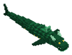

Bestiario › Único


Variantes de color
Leviatán de la Ciénaga Esmeralda
Terror de los Ríos de Lodo
Próximamente · Alfa 0.4 Hostil Nadador Único
Serpiente marina de escamas verde esmeralda y vientre de cieno; emerge de las aguas tóxicas barriendo barcas y jugadores con la cola.
415Nivel
300Vida
13,5Daño
26Armadura
0Regeneración
6Velocidad
Dónde aparece
| Profundidad | 40 – 120 bloques |
|---|---|
| Enemigo único | Ciénaga Tóxica. Probabilidad 25 % en cada comprobación (cada 20 s); no vuelve a salir en la región hasta 7 días después de morir. |
Efectos de sus ataques
- Sangrado · 40 % · 4 s (al golpear)
- Empuje · 10 (al golpear)
Botín
| Objeto | Cantidad | Probabilidad |
|---|---|---|
 Amuleto de la Perla del Leviatán Amuleto de la Perla del Leviatán | 1 | 100 % |
 Pechera de Nácar Abisal Pechera de Nácar Abisal | 1 | 50 % |
 Cubito de Oro Cubito de Oro | 12 | 100 % |
Combate de jefe
Escala ×1,6 · radio de la arena 64 bloques.
- Por debajo del 50 % de vida: armadura ×1,6 — «El Leviatán se sumerge y su piel se cierra»
- Por debajo del 20 % de vida: velocidad ×1,5, daño ×1,5 — «¡Embestida hidráulica!»
Archivo de datos: mods/mobs/emerald_swamp_leviathan.json · tamaño del vóxel 0,2 m · cuerpo de 2,4 × 2 bloques